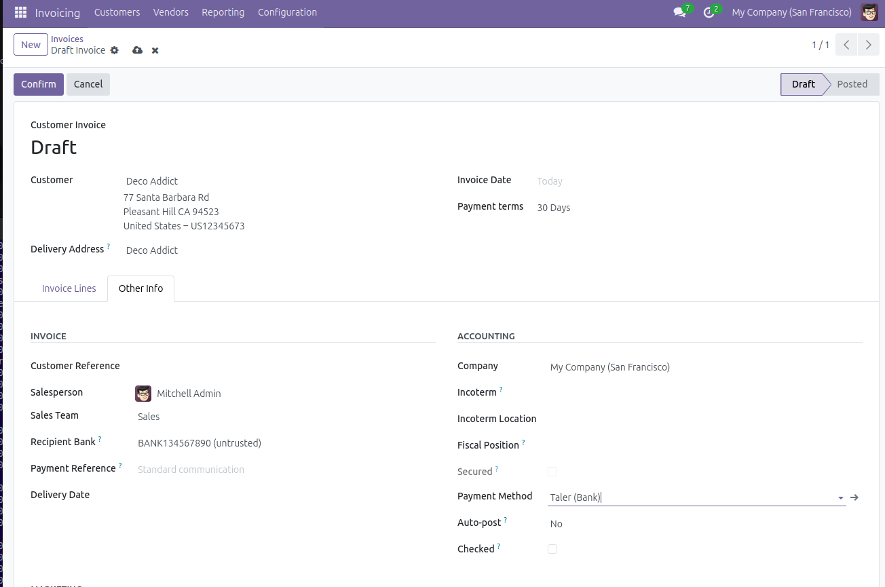
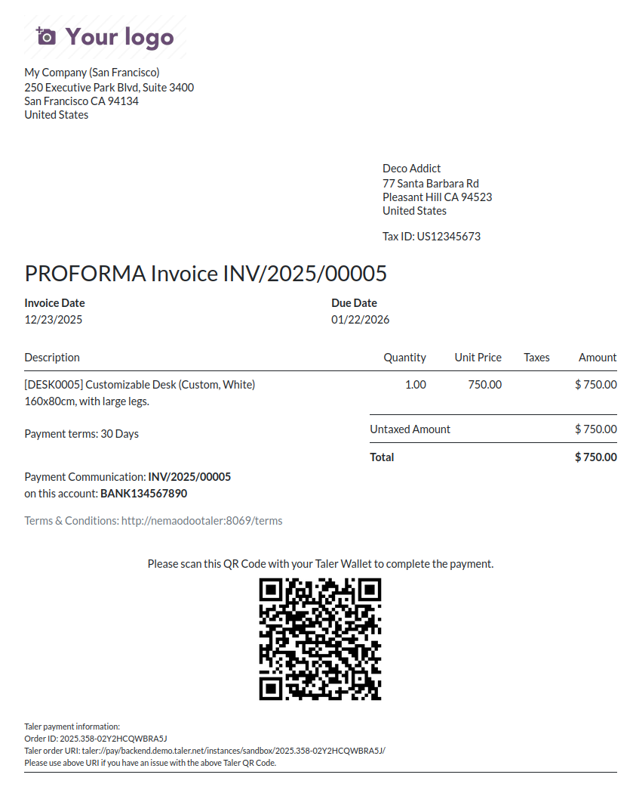
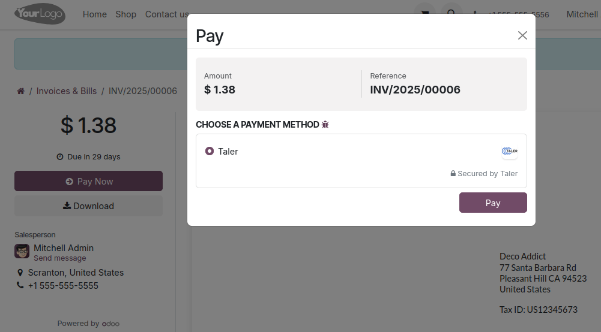
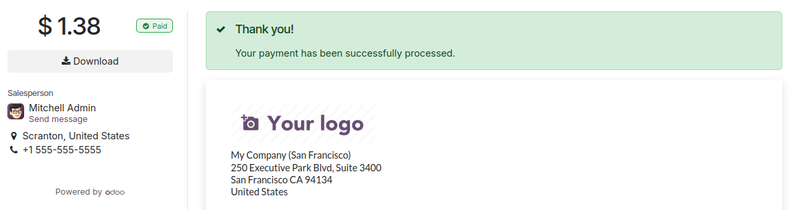

Invoicing¶
Create an invoice that can be paid using Taler¶
It is possible to create an invoice that includes a Taler QR Code to pay it.
Go to the Invoicing app and create a new invoice.
Fill any data relevant to the invoice that you are creating.
Important step: In the
Other Infotab, set the Payment Method toTaler(see below). Otherwise, the QR Code will not be generated.
{kind=link}

When you are done, click
Confirmat the top, you will be led to the invoice page.You can now click
Previewto see the Invoice that will be sent to your customer.The invoice’s PDF will include a Taler payment QR Code, as well as some Taler order information.
{kind=link}

If a customer pays for the invoice using the QR Code present in the PDF, you will have to do a manual payment reconciliation.
To do this, once you confirm that you received the payment, go to the Invoices’ app page.
Click on
Pay.Confirm the data shown in the opened window, it is recommended to add the Taler OrderID shown on the invoice, to the
Memofield, to keep track of the payment more easily.Press
Create Payment.
Pay an invoice online using Taler¶
Note
This process is unrelated to the invoices created with Taler in the previous step
Any invoice can be paid online using Taler.
Go to the Invoicing app and create a new invoice.
Once created, you can press
Previewto see the page that the customer will see.On this page, the user will be able to click
Pay Now, and choose Taler as a payment option.
{kind=link}

Once they click
Pay, they will be redirected to the Taler order page, where they can pay with a Taler wallet on their phone or web browser (in the same way as for an eCommerce payment).When the payment is complete, the customer will be sent back to the invoice page, with a notice saying that the payment is successful.
{kind=link}
